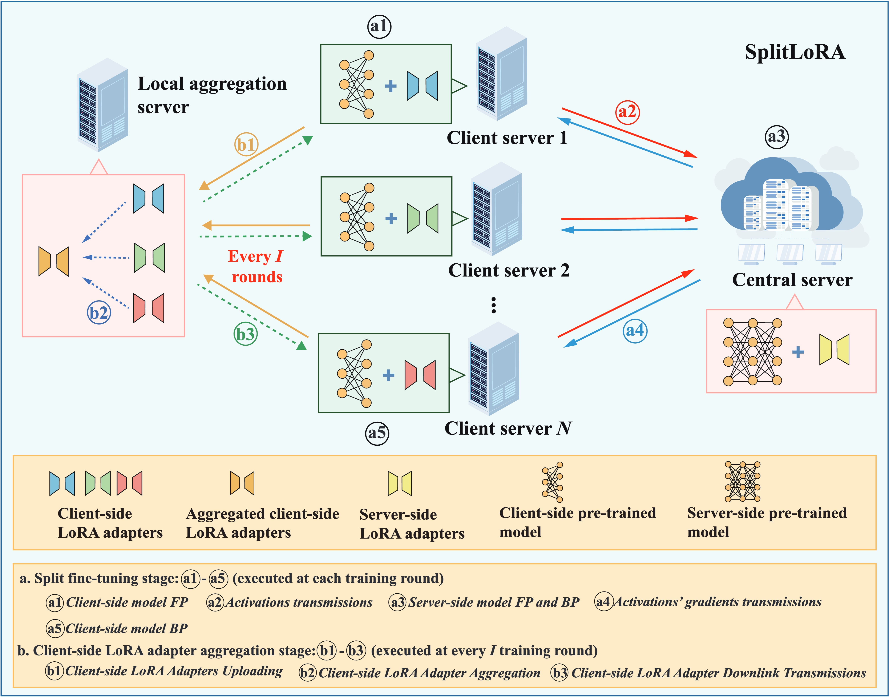
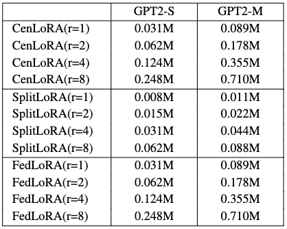

SplitLoRA: A Split Parameter-Efficient Fine-Tuning
Framework for Large Language Models
|
|
1School of Computer Science, Fudan University, Shanghai, China
2Department of Electrical and Electronic Engineering, University of Hong Kong, Pok Fu Lam, Hong Kong, China
3Department of Electrical and Computer Engineering, University of Maryland, College Park, USA
4Massachusetts Institute of Technology, Cambridge, USA
5Mohamed bin Zayed University of Artificial Intelligence, Abu Dhabi, United Arab Emirates
|
Abstract
The scalability of large language models (LLMs) has led to significant achievements in key domains.
Despite the urgent need for more training data, there is a concerning depletion of high-quality public datasets anticipated within a few years.
To address this, the federated learning (FL) LLM fine-tuning paradigm has been proposed to enable collaborative LLM fine-tuning on distributed private data.
However, the large size of LLMs presents significant challenges to the democratization of this FL fine-tuning paradigm.
To mitigate this, split learning (SL) has emerged as a promising solution by offloading the primary training workload to a server through model partitioning.
Nonetheless, research on the SL LLM fine-tuning paradigm remains in its early stages. To fill this gap, we propose SplitLoRA, the first SL LLM fine-tuning framework.
Built on the split federated learning (SFL) framework, SplitLoRA combines the advantages of parallel training from FL and model splitting from SL, significantly enhancing training efficiency.
As the inaugural open-source benchmark for SL LLM fine-tuning, SplitLoRA provides a foundation for research efforts aimed at advancing this field.
Extensive simulations validate that SplitLoRA achieves target accuracy in significantly less time than state-of-the-art LLM fine-tuning frameworks.
TLDR takeaways

SplitLoRA consists of three fundamental components:
- Client server has sufficient computing capability to execute the forward propagation (FP) and back-propagation (BP) of the client-side pre-trained model.
- Central server is a powerful computing entity responsible for performing server-side pre-trained model fine-tuning.
- Local aggregation server takes charge of synchronizing client-side LoRA adapters, periodically aggregating them from all participating edge servers.
Our SplitLoRA framework involves the following steps:
-
Split Fine-Tuning Stage
- Client-side Model Forward Propagation
- Activations Transmissions
- Server-side Model Forward Propagation and Back-propagation
- Activations' Gradients Transmissions
- Client-side Model Back-propagation
-
Client-side LoRA Adapter Aggregation Stage
- Client-side LoRA Adapters Uploading
- Client-side LoRA Adapter Aggregation
- Client-side LoRA Adapter Downlink Transmissions
Key observations
We compare SplitLoRA with two canonical benchmarks:
-
Centralized LoRA (CenLoRA): Client server collects raw data from other participating servers for full model fine-tuning with LoRA adapters.
-
Federated LoRA (FedLoRA): Each participating client server locally fine-tunes the full model and then transmits the updated LoRA adapters to the local aggregation server for adapter aggregation.
Performance Evaluation
1. Perplexity (PPL) performance evaluation, where a lower PPL indicates better predictive performance.
2. Converged accuracy for E2E NLG challenge.
3. Convergence rate.
| GPT2-S |
GPT2-M |

|

|
4. The number of trainable parameters.

For more detailed experimental results, please refer to our paper.
Future Direction about SplitLoRA
-
Model Splitting: Selecting the cut layer allows control over the data volume transmitted to the central server. Moreover, the cut layer affects the division of computing workload between client devices and the central server.
-
Heterogeneous Configuration: In practice, the available resources among different client servers/devices vary significantly, leading to vastly different training times and causing a severe straggler problem in model aggregation. Therefore, it is essential to configure heterogeneous fine-tuning module structures for client servers/devices with varying resources.
-
Efficiency: The practical implementation of SplitLoRA typically necessitates leveraging private data residing on edge devices (e.g., smartphones and laptops) with lower computing and storage resources than data centers for LLM fine-tuning. Designing efficient model compression and quantization techniques to achieve a more storage, communication, and computation-efficient SL LLM fine-tuning framework is warranted.
-
Privacy Preservation: Due to the powerful capabilities of LLMs, fine-tuning them may inadvertently memorize and expose detailed information. Therefore, it is crucial to design efficient privacy-preserving mechanisms and strategies that ensure the training performance and effectiveness of SplitLoRA without compromising individual privacy.
@article{xx,
xxxx
journal={arXiv preprint arXiv:2402.16828},
year={2024}
}
Website template edited from Colorful Colorization.